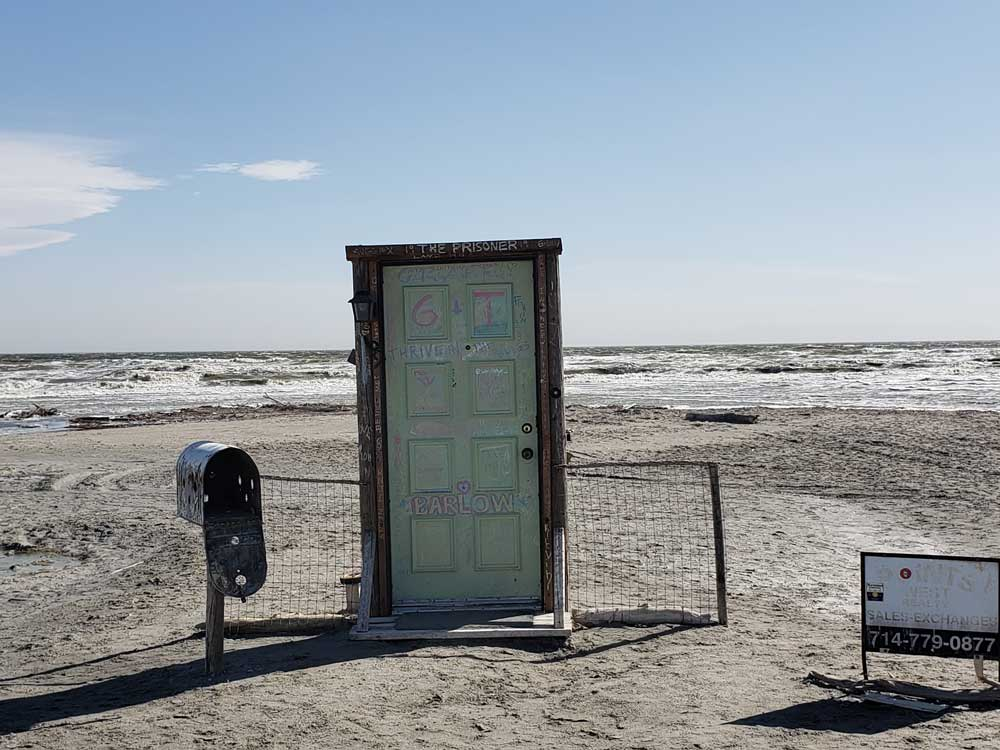
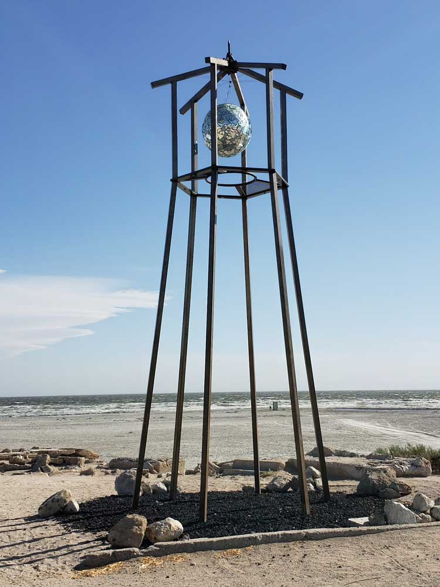
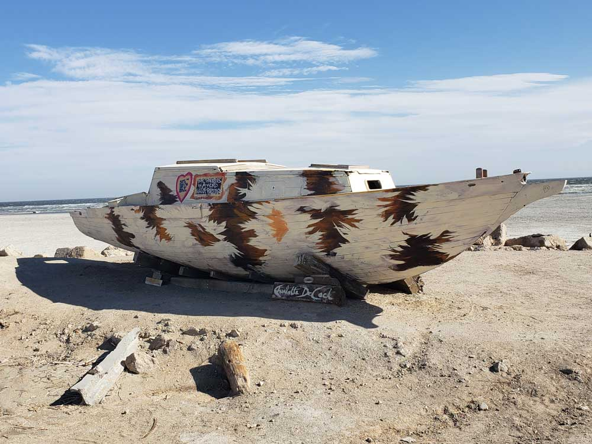

Shallow, landlocked body of water that has a high concentration of salts, with abandoned structures and surrounds have been reinvented as a destination for desert art and Salton Sea State Recreation Area offers hunting, fishing, swimming, and camping
Brawley, CA, 41 mi
How to Get There
From Palm Springs (60 mi): Take E Alejo Rd to E Vista Chino. Turn right onto E Vista Chino. Get on I-10 E in Cathedral City. Follow I-10 E and CA-86 S to N Marina Dr in Imperial County. Continue on N Marina Dr. Drive to Sea Garden Ave in Salton City
From San Diego (120 mi):Continue to CA-94 E. Follow I-8 E to CA-111 N in Imperial County. Take the CA-111 N exit from CA-111 N. Follow CA-111 N to Avenue E in Bombay Beach.
Overview
The Salton Sea is California's largest lake and one of the most unusual destinations in the American Southwest. Created by flooding from the Colorado River in the early 1900s, the sea is surrounded by desert scenery, migratory bird habitat, historic resort remnants, art installations, and striking shoreline landscapes that attract photographers, birdwatchers, campers, and outdoor enthusiasts.
The Salton Sea is a shallow, landlocked body of water that has a high concentration of salts on the San Andreas Fault at the southern end of California. For thousands of years, the Colorado River has alternately flowed into and out of the valley, creating a freshwater lake or an increasingly saline lake, and a dry desert basin, respectively, depending on river flows and the balance between inflow and evaporative loss.
The lake was created by inflow of water from the Colorado River in 1905. Beginning in 1900, an irrigation canal was dug from the Colorado River to the old Alamo River channel to provide water to the Imperial Valley for farming. Water from spring floods broke through a canal head-gate diverting a portion of the river flow into the Salton Basin for two years before repairs were completed. The water in the formerly dry lake bed created the modern lake that is about 15 by 35 miles.
The lake would have dried up, but farmers used generous amounts of Colorado River water and let the excess flow into the lake. In the 1950s and into the '60s, the area became a resort destination, and communities grew with hotels and vacation homes. Birdwatching was also popular as the wetlands were a major resting stop on the Pacific Flyway.
In the 1970s, scientists issued warnings that the lake would continue to shrink and become more inhospitable to wildlife. In the 1980s, contamination from the farm runoff promoted the outbreak and spread of diseases. Massive die-offs of the avian populations have occurred, especially after the loss of several species of fish on which they depend. Dead fish would wash up on the shore as the lake became so salty that large fish kills occurred. Tourism was drastically reduced.
After 1999, the lake began to shrink as local agriculture used the water more efficiently so less runoff flowed into the lake. In 2020, Palm Springs Life magazine summarized the ecological situation as "Salton Sea derives its fame as the biggest environmental disaster in California history".
Things to Do
Explore Salton Sea State Recreation Area
Located along approximately 14 miles of shoreline, Salton Sea State Recreation Area provides access to beaches, campgrounds, day-use areas, fishing spots, kayaking opportunities, picnic areas, and scenic desert views. The park is a popular destination for visitors looking to experience the sea's unique environment and wildlife.
Go Birdwatching Along the Pacific Flyway
The Salton Sea is one of North America's most important bird migration stops. More than 400 bird species have been documented here, and millions of birds pass through the area each year. Winter months provide some of the best opportunities to observe pelicans, herons, egrets, geese, shorebirds, and numerous other species.
Photograph the Surreal Shorelines
The Salton Sea is known for its distinctive shoreline scenery, including salt formations, desert vistas, abandoned structures, wildlife habitat, and dramatic mountain backdrops. The area's unusual appearance and changing water levels make it a favorite destination for landscape and fine-art photographers.
Visit the Galleta Meadows and Desert Art Installations
Nearby attractions include large-scale public art, colorful desert installations, and famous attractions such as Salvation Mountain and the communities surrounding the sea. These destinations contribute to the region's reputation as one of California's most visually distinctive and creative landscapes.
Watch Spectacular Sunrises and Sunsets
The expansive shoreline and surrounding mountain ranges create ideal conditions for colorful sunrises and sunsets. Reflections on the water, dramatic cloud formations, and desert lighting make the Salton Sea one of Southern California's most underrated sunset destinations.
Top Trails
Salton Sea Shoreline Trail
Length: Approximately 2.5 miles round trip
Elevation Gain: Minimal
Difficulty: Easy
This flat shoreline walk allows visitors to observe birdlife, salt formations, desert scenery, and views across California's largest inland lake. It is ideal for photography and wildlife observation.
Desert Ecology Trail
Length: Approximately 1 mile round trip
Elevation Gain: Minimal
Difficulty: Easy
This short interpretive route introduces visitors to the desert ecosystem surrounding the Salton Sea, including native plants, wildlife habitats, and geological features.
Visitor Center Loop Trail
Length: Approximately 0.8 miles round trip
Elevation Gain: Minimal
Difficulty: Easy
A family-friendly walk near the visitor area featuring shoreline views, birdwatching opportunities, and educational exhibits about the Salton Sea ecosystem.
Rock Hill Trail
Length: Approximately 1.2 miles round trip
Elevation Gain: Approximately 80 feet
Difficulty: Easy
This short hike provides views of the surrounding desert terrain, distant mountains, and the expansive waters of the Salton Sea.
Additional Information
History
Throughout the Spanish period of California's history, the area was referred to as the "Colorado Desert" after the Colorado River. In a railroad survey completed in 1855, it was called "the Valley of the Ancient Lake". On several old maps from the Library of Congress, it has been found labeled "Cahuilla Valley" (after the local Native American tribe) and "Cabazon Valley" (after a local Native American chief - Chief Cabazon). "Salt Creek" first appeared on a map in 1867 and "Salton Station" is on a railroad map from 1900, although this place had been there as a rail stop since the late 1870s. Until the advent of the modern sea, the Salton Sink was the site of a major salt-mining operation.
Agriculture, tourism and wildlife proliferate
In the 1920s, agriculture had boomed in the valley as the Imperial Irrigation District delivered large quantities of Colorado River water to irrigate the crops. The lake would have dried up naturally, but with flood irrigation being commonly used, plenty of water ran off the farms into the lake and kept it full. In 1930, a wildlife refuge was established on some wetlands along the edge of the lake that had attracted many birds. The fish flourished in the lake and provided a source of food for massive populations of migratory birds. Birdwatchers flocked to this new refuge in the middle of a desert.
In the 1950s and into the 60s, the communities expanded as the area's reputation as a resort destination and sport fishery grew. Hotels and yacht clubs were built on the shore along with homes and schools. Resorts in communities like Bombay Beach hosted entertainers such as Frank Sinatra, The Beach Boys and Bing Crosby. Yacht clubs held parties at night and golf courses provided recreation. Many people came for boating activities such as water skiing and fishing as stocked fish proliferated. Lakeshore communities grew as vacation homes were built. More than 1.5 million visitors visited annually at the peak.
In the 1990s, the shores were littered with stinky dead fish as the lake had gotten so salty that large die-offs occurred. In 1999, the lake began to recede dramatically. The dropping water level stranded many of the remaining boat docks, residences, and businesses.
Communities
The Salton Sea had some success as a resort area, with Salton City, Salton Sea Beach, and Desert Shores, on the western shore and Desert Beach, North Shore, and Bombay Beach, built on the eastern shore in the 1950s. Due to the increasing salinity and pollution of the lake over the years from agricultural runoff and other sources, the communities substantially shrank in size, or have been abandoned. The smell of the lake, combined with the stench of the decaying fish, also contributed to the decline of the tourist industry around the Salton Sea.
Since 2011, Bombay Beach and its surrounds have been reinvented as a destination for desert art. It's not alone in that distinction - south of the city lie the towns of Niland and Slab City, other areas that have attracted artists and led to creations like East Jesus and Salvation Mountain. Some people are visiting the Salton Sea and the surrounding settlements to explore the abandoned structures and see the squatter settlement of Slab City.
The population of Bombay Beach declined for years and the buildings were rotting away, but some people had moved into the settlement. A news item in April 2018 stated that it was "enjoying a rebirth of sorts with an influx of artists, intellectuals and hipsters who have turned it into a bohemian playground".
Sources: California State Parks official Salton Sea State Recreation Area information, including history, camping, kayaking, hiking, birdwatching, shoreline access, and recreation opportunities.
https://www.parks.ca.gov/?page_id=639
Additional California State Parks visitor information covering bird migration, camping facilities, day-use amenities, fishing, boating, wildlife viewing, and educational programs at the Salton Sea.
https://www.parks.ca.gov/?page_id=21261
This article uses material from the Wikipedia article "Salton Sea ", which is released under the Creative Commons Attribution-Share-Alike License 3.0


